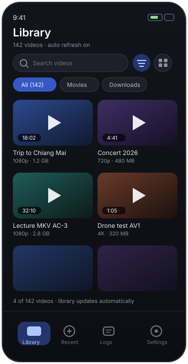

Play anything on your phone.
Then prove why it failed.
An Android player for the videos already on your device: hardware decoding when it works, bundled FFmpeg decoders when it does not, and a log you can send in one tap when a file still refuses to play.


Download
This page asks the GitHub API for the newest release each time it loads, so the buttons below always point at the current build.
Asking the GitHub API for the latest release…
Why this player exists
Three things break video playback on real phones: a codec the chip does not have, an app with no diagnostics, and a player that hides the trade-off between battery and compatibility. This project attacks all three.
Two decoder paths
Media3/ExoPlayer runs the phone's hardware decoders first. When a file needs something the SoC cannot do, bundled FFmpeg decoders (NextLib) take over. Priority is a setting, not a secret.
Logs built for bugs
Rotating log files, crash capture with stack traces, device and MediaCodec inventory, and
export as .txt or .zip — share it or save it to Downloads.
No internet permission
The manifest has no INTERNET permission. Your videos and logs cannot leave the
device except through the share sheet you trigger.
Common gestures
Swipe for brightness and volume, double tap to seek, long press for 3× speed, control lock, aspect modes, subtitles from disk, picture-in-picture.
Finds your files
MediaStore scan with live refresh, thumbnails rendered from the video, search, folder chips, seven sort orders, grid or list.
Shows the streams
While watching, the info panel names the exact video, audio and subtitle formats that were selected, plus a full diagnostics copy button.
Screens
These are vector mockups of the shipped layouts, not device captures.



Send a bug report that actually helps
- Reproduce the problem once, so the failure sits at the end of the log buffer.
- Open the Logs tab and tap Share (the zip carries the most context).
- Attach it to an issue along with the container and codec of the file, if you know them — the player's info panel shows both.
Requirements & build info
| Minimum Android | 8.0 (API 26) |
|---|---|
| Built against | compileSdk / targetSdk 37, JDK 17, AGP 9.4.1, Gradle 9.8.1 |
| Playback | Media3 1.11.1 (ExoPlayer) with NextLib FFmpeg renderers 1.11.1-0.16.0 |
| UI | Jetpack Compose (BOM 2026.09.00), Material 3, dynamic colour |
| Licence | GPL-3.0-or-later (the FFmpeg decoder library is GPL-3.0) |